Project Overview
This project implements a physically-based path tracer that simulates light transport to produce photorealistic images! Starting from raw ray generation through a virtual camera, the system builds up to full global illumination with multiple light bounces, color bleeding, and adaptive sampling. The most interesting challenge was understanding the importance of reversing the direction of ray tracing, shooting from the camera rather than the light, produces computationally efficient results.
Part 1
Monte CarloConceptual Journey
Part 1 starts at the base of the rendering world, the three coordinates of x,y,z. Throughout the tasks of part 1, a key concept is to understand how the image space, a normalized 0-1, camera space, the sensor place at Z = -1, and the world space interacts with each other to generate rays. Furthermore, recognizing the transformation as linear range remapping problem, similar to scaling in architecture and blueprints!
Initially tried simple multiplication of the normalized coordinates with the tan values, but I quickly realized that would return zero since a - a = 0 and 0 * any value = 0. The breakthrough came when recognizing it as the standard linear remap, the architecture example I mentioned before. The formula from lecture slides a + t * (b - a).
Throughout part 1, I kept mixing up hFov and vFov between the sx and sy formula. I had to work through debugging methodically, like checking where I messed up in a long math problem, by going back to the sensor corner definitions in the spec. Also, had to remember degrees to radians conversion! For world space, initially thought both origin and direction needed the c2w matrix applied, but then realized the origin is just post since it's already stored in world space, and it's a normalized vector.
Task 1 - generate _ray
Here is how I implemented the algorithm for the generate_ray function. First, one has to understand the layout of the world. The corners are at (-tan(hFov/2), -tan(vFov/2), -1) and (tan(hFov/2), tan(vFov/2), -1). The key mapping uses the linear range formula a + t * (b-a) where t is the normalized image coordinate, a is the left or bottom edge sensor, and b is the right or top edge. hFov dictates the horizontal axis only, hence the h standing for horizontal. vFov dictates the vertical axis. Mixing them up produces a lot of bugs and wrong results! After computing the sensor point (sx, sy, -1) in camera space, the origin of the world space ray is just pos! Pos is already the world space given through starter code, and the direction is product of c2w with sensor_point variable. I made sure to normalize the direction to keep each vector uniform. A key debug moment was discovering PART was set to part 5 in ray.h from the starter code, which needed resetting to 1. Also, the Ray default constructor doesn't initialize inv_d. To fix it use the Ray(o,d) constructor.
Task 2 - raytrace_pixel
The goal is Monte Carlo estimation! The average of ns_aa radiance samples per pixel. The gridSampler gives a random offset within the pixel, added to the integer pixel coordinates before normalizing by image dimensions: (x + sample.x) / sampleBuffer.w. Had an operator precedence bug! I at first wrote
x + sample.x / sampleBuffer.w instead of (x + sample.x) / sampleBuffer.w.
The most frustrating bug was the solid cyan output persisting even after correct code was written! After extensive print debugging showing sx and sy were varying correctly, finally discovered the leftover starter code sampleBuffer.update_pixel(Vector3D(0.2, 1.0, 0.8), x, y) was overwriting every pixel with hardcoded cyan after the real computation.
Task 3 - Triangle Intersection (Moller-Trumbore)
Used the Möller–Trumbore algorithm. The three validity conditions are b1 >= 0, b2 >= 0, b1 + b2 <= 1, plus t within [min_t, max_t]. The third barycentric condition b1 + b2 <= 1 wasn't immediately obvious to me at first, but makes sense geometrically. All three weights must sum to 1, so if the first two exceed 1 the third would be negative, placing the point outside the triangle. The interpolated normal uses barycentric coordinates as weights: b0 * n1 + b1 * n2 + b2 * n3. Had a syntax issue with normalize(), the CGL library uses .unit() instead.
Task 4 - Sphere Intersection
Used the quadratic formula by substituting the ray equation into the sphere equation to get coefficients a, b, c. The discriminant determines whether there are 0, 1, or 2 intersection points. The closer intersection t1 is tried first, falling back to t2 if t1 is out of range. The normal is simpler than triangles, just the normalized vector from sphere center to hit point. I messed up understanding a name collision between the Ray parameter r and the sphere's radius member variable r. The variable names mixed me up. I solved it with this->r. The CGL function r.at_time(t) computes r.o + t * r.d conveniently.
Normal Shading Results
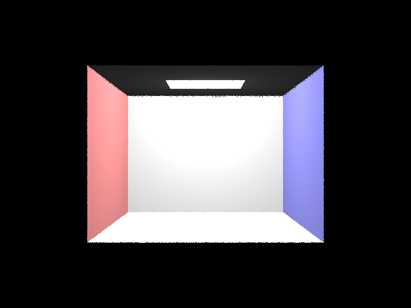
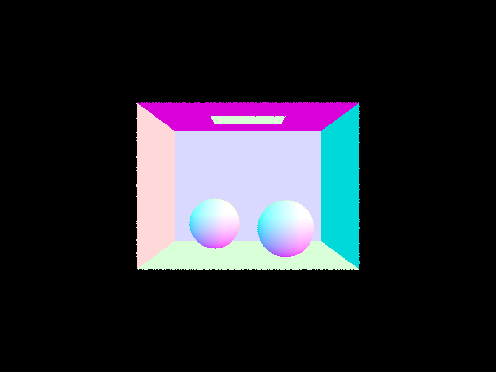
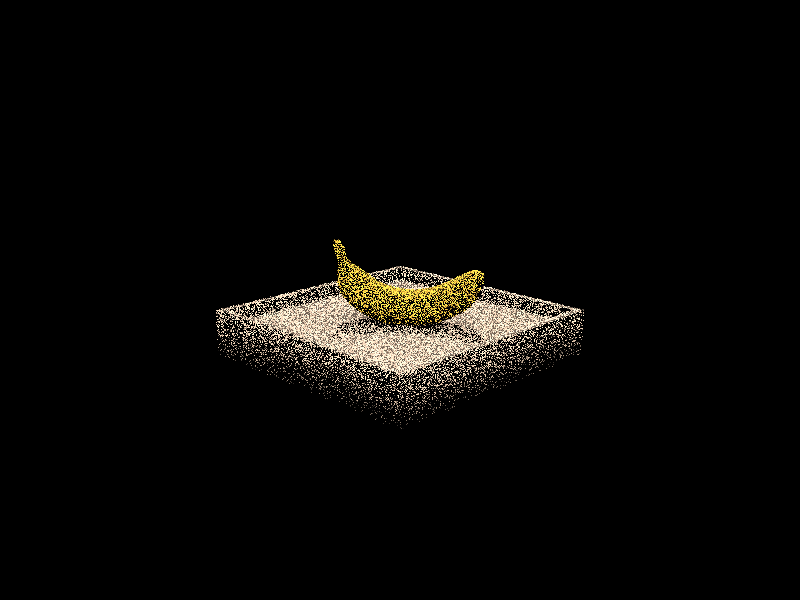
Part 2
BVH AccelerationInitial Conceptual Confusion
I started with a shaky mental model of what BVH actually was! Initially thought of it as "a list of primitives in a bounding box" without understanding the hierarchical splitting. The breakthrough came from the analogy of having 1000 triangles I could touch in a room. Instead of checking every triangle, you put a big box around everything, split it in half, keep splitting until each box has only a few triangles. Going back to ray generation, the rays skip huge chunks of geometry by testing boxes first. Once the tree analogy clicked, I also realized its similarity to a binary search tree but for 3D spaces, the recursive structure made sense naturally.
BVH Construction - construct_bvh
Building from understanding, here is my implementation for construct_bvh, a recursive binary tree construction. The base case is if primitives <= max_leaf_size, return a leaf node. Otherwise, find the longest axis of the bounding box using bbox.extent, sort primitives by their centroid along that axis using std::sort with a lambda, split at the midpoint, and recursively build left and right children. My algorithm takes my visualization of drawing boxes around triangles to splitting along the longest axis of the bounding box. A bug I was debugging for a while was initially passed end instead of mid to the left child, causing infinite recursion. Also, initially tried start/2 to find the midpoint, you can't divide iterators, must use start + std::distance(start, end)/2.
BBox::intersect — Slab Method
Initially mixed up r.min_t/r.max_t (the ray's valid range) with the slab t values (the intersection times with each plane pair). The slab method computes entry/exit t values per axis using the bbox corners and r.inv_d, swaps them if needed, then takes the max of entries and min of exits. Had issues with std::max/std::min being ambiguous between CGL Vector3D versions and std versions. I fixed this by explicitly using std::max and std::min. Also had variable naming confusion, naming mmax as the max of the mins and cleaned up by renaming to t0 and t1.
BVH Traversal & Bounding Box Intersection
For has_intersection, I initially kept the starter code loop that iterated over ALL primitives which completely defeated the purpose of BVH and was still O(n). My new traversal checks the bounding box first, remember the boxes around the triangles, then either tests leaf primitives or recurses. For intersect, was at first confused about how to find the closest hit. I expected to need explicit distance math comparing children. However, I realized that r.max_t automatically shrinks every time a primitive intersection is found, so any future primitive or bbox that's farther away automatically fails the validity check.
Large Scene Renders (BVH only)
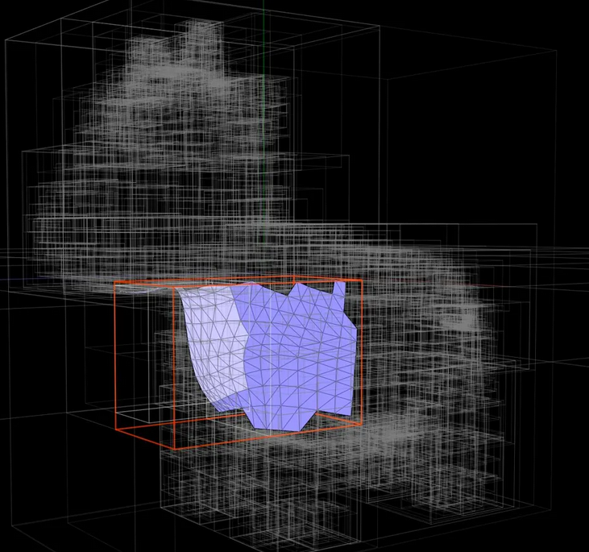
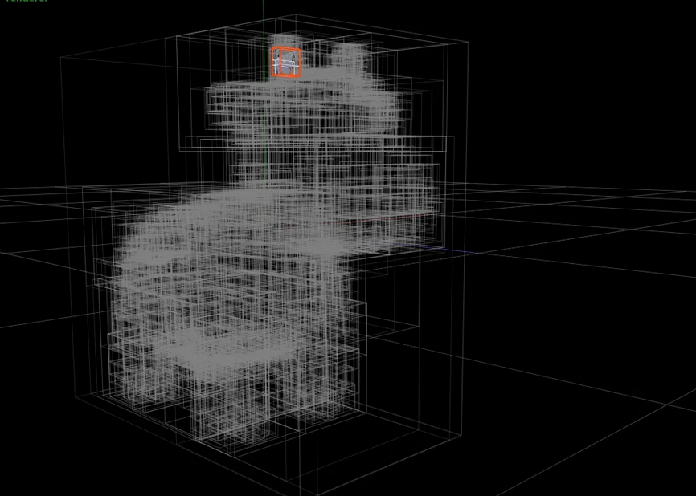
Part 3
Ray TracingConceptual Journey
The "reverse ray tracing" concept felt counterintuitive at first. The instinct was "why not shoot rays from the light source toward the camera?" The realization that clicked was efficiency importance! If you shoot from the light, the vast majority of rays miss the camera entirely. By shooting backward from the camera, every ray is guaranteed to contribute to a pixel. The math works out the same since light transport is reversible. And this is why varied shadows work. Different points on the surface have different probabilities of "seeing" the light depending on geometry, distance, and occlusion.
Zero-bounce Radiance
Zero bounce means light that reaches the camera directly from the light source without any bounces. The function simply returns isect.bsdf->get_emission(), one line! This is what makes the light rectangle on the ceiling visible while everything else remains black.
Hemisphere Sampling
Hemisphere sampling estimates direct lighting by randomly sampling directions in a hemisphere around the hit point, then checking if those directions lead to a light source. My algorithm implementation:
For each sample: get wInObjectSpace from hemisphereSampler, cosTheta = wInObjectSpace.z (since the normal is always (0,0,1) in object space), convert to world space with o2w, cast a new ray from hit_p with min_t = EPS_F to avoid self-intersection. If the ray hits something, get its emission and accumulate using the reflection equation: f(w_out, wInObjectSpace) * emission * cosTheta / pdf. PDF for uniform hemisphere = 1/(2*PI). Average over all samples at the end.
Debugging
First render came out completely white! All three issues in combination: cosTheta was computed incorrectly, one_bounce_radiance had both branches calling importance sampling instead of one calling hemisphere, and estimate_direct_lighting_importance was returning Vector3D(1.0) from starter code instead of black.
Importance Sampling
Instead of random hemisphere directions, importance sampling goes directly to each light source. For my implementation:
each light, determine num_samples (1 for point lights, ns_area_light for area lights). Call sample_L to get emission, world-space direction wi, distToLight, and pdf. Convert wi to object space for cosTheta. If cosTheta <= 0, the light is behind the surface → skip. Cast a shadow ray from hit_p toward the light with max_t = distToLight - EPS_F. If has_intersection returns false, nothing is blocking, so accumulate: f(w_out, wiObjectSpace) * lightDir * cosTheta / pdf. Divide each light's contribution by num_samples.
Debugging
Accumulated directly into L_out inside the inner loop instead of a per-light light_total accumulator, meaning the division by num_samples at the end was wrong. Fixed by introducing light_total per light and only adding light_total / num_samples to L_out after the inner loop.
Both Implementations Compared
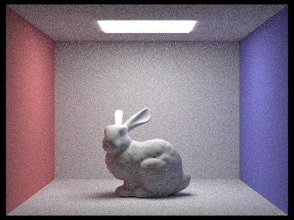
Noise Comparison — Varying Light Rays (Importance Sampling, s=1)
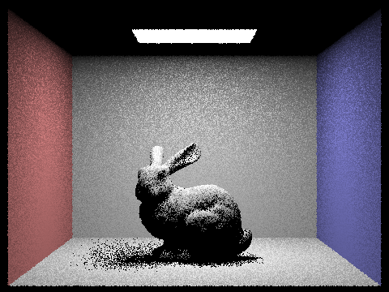
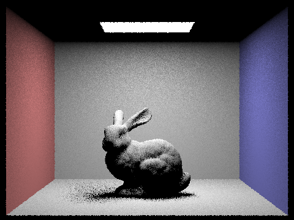
Uniform hemisphere sampling and light importance sampling both estimate the same integral, how much direct light reaches a surface point, but differ fundamentally in where they draw samples from. Hemisphere sampling draws uniformly from all directions, meaning most samples contribute zero radiance since they miss all light sources entirely. This wastes computation and requires many samples to converge. Importance sampling targets lights directly, guaranteeing every sample either contributes light or reveals a shadow. The result is dramatically less noise at equivalent sample counts. The tradeoff is that hemisphere sampling can capture any light source including indirect lighting by accident, while importance sampling only captures direct lighting from known sources. For direct illumination specifically, importance sampling is strictly superior.
Part 4
Global IlluminationInitial Perception and Confusion
Coming into Part 4, my first reaction was "didn't we already do this in Part 3"? The bunny render looked fully illuminated with proper shadows, so what could global illumination possibly add? I had to change my perspective and reconsider thinking about the red and blue walls in the Cornell Box. In Part 3, the bunny is perfectly gray even when sitting right next to the red wall. In reality, the red wall would bounce red light onto nearby surfaces, giving them a reddish tint! This is color bleeding. Direct lighting alone can't produce this because it only considers light that travels directly from the source to the surface in one step.
Real World Example That Clicked
Think of being in a room painted entirely red. Even if the light source is white, everything appears reddish because light bounces off the red walls and tints everything it subsequently hits. This is fundamentally different from light passing through objects. I initially confused color bleeding with light transmittance, like when light passing through skin giving it a warm glow. The distinction is important because transmittance requires a completely different BSDF and is not implemented here. What we are simulating is purely reflective bouncing. The light hits a surface, some is absorbed, the rest bounces in a new direction according to the BSDF.
Why Global Illumination is Needed
Direct lighting misses several real world phenomena. Shadows in direct lighting are completely black, in reality indirect light partially fills them in, making soft shadow gradients. Surfaces not directly visible from any light source appear completely black in direct lighting but in reality receive indirect bounced light. Color bleeding from colored surfaces onto neighboring objects is entirely absent without multiple bounces. The ceiling of the Cornell Box is a perfect example. In direct lighting it's completely black except the light rectangle, but in reality light bouncing off the floor and walls illuminates it slightly. Shadows still exist! They're just softer because indirect light fills them in partially.
Indirect Lighting Implementation - at_least_one_bounce_radiance
The core function is recursive. It first computes one direct bounce using one_bounce_radiance (when isAccumBounces is true or at the first call depth), then samples a new direction using sample_f which returns the BSDF value and sets wi and pdf. A new ray is cast from hit_p in that direction. If it hits something, the function calls itself recursively on that new intersection, accumulating the indirect contribution scaled by surfacef * cosTheta / pdf. The depth tracking initializes camera rays in raytrace_pixel with pixelRay.depth = max_ray_depth. Each recursive call decrements depth by 1.
Russian Roulette
Adds random termination with probability 0.38, a number between 0.3 and 0.4 to make sure there is a high chance it won't immediately terminate. The spec requires always tracing at least one indirect bounce when r.depth == max_ray_depth. Russian Roulette only applies to subsequent bounces. The continuation probability 0.62 = 1 - 0.38 is used to divide the surviving paths' contributions, keeping the expected value correct while allowing variable path lengths. coin_flip(p) returns true meaning TERMINATE with probability p, so lower p means more bounces, higher p means fewer.
isAccumBounces Debugging
The isAccumBounces implementation caused significant debugging difficulty. Initial attempt used !isAccumBounces (wrong negation) which inverted the entire logic. Then an infinite recursion segfault (exit code 139) occurred when at_least_one_bounce_radiance was accidentally called with the same ray r instead of one_bounce_radiance. The depth comparison r.depth == max_ray_depth had a subtle edge case at m=0 where both sides equal 0, causing one_bounce to incorrectly trigger. Fixed by changing the condition to check r.depth == 1 for the unaccumulated case. The zero_bounce visibility issue for unaccumulated m=0 required a separate fix in est_radiance_global_illumination. Zero bounce must always be added when max_ray_depth == 0 regardless of isAccumBounces. Also needed a hard guard at the very top of at_least_one_bounce_radiance: if r.depth == 0 return L_out immediately.
Unaccumulated vs Accumulated
Unaccumulated renders show only the contribution from that specific bounce depth. m=0 shows only the light source, m=1 shows only direct lighting with no light source visible, m=2 shows only the second indirect bounce which is dim with slight color tinting, getting progressively dimmer with each additional m. Accumulated renders progressively add each bounce's contribution, growing brighter and more colorful with each additional m value as indirect illumination fills in shadows and color bleeding accumulates.
Global vs Direct Illumination
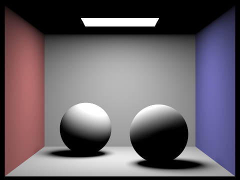
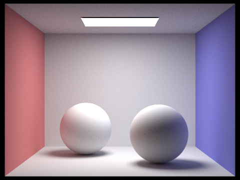
Unaccumulated Bounces — CBbunny.dae
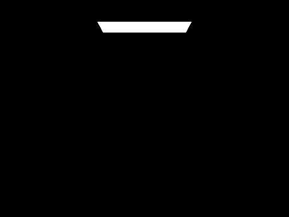
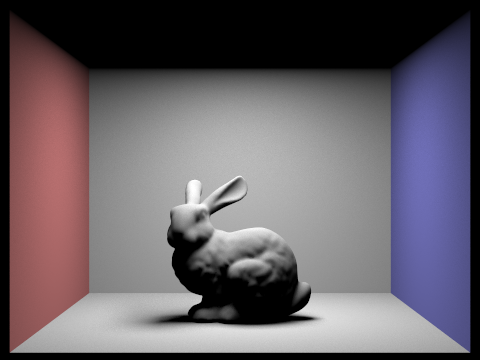
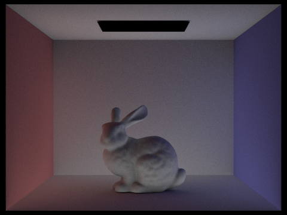
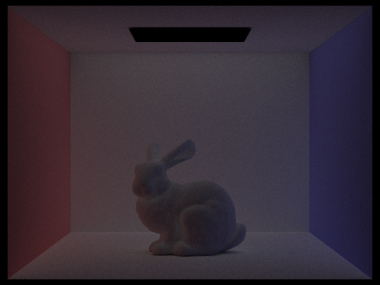
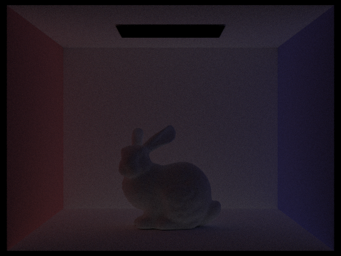
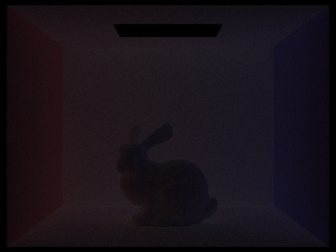
Accumulated Bounces — CBbunny.dae
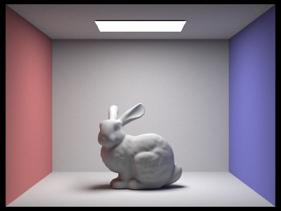
Russian Roulette — CBbunny.dae
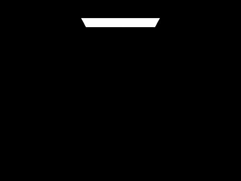
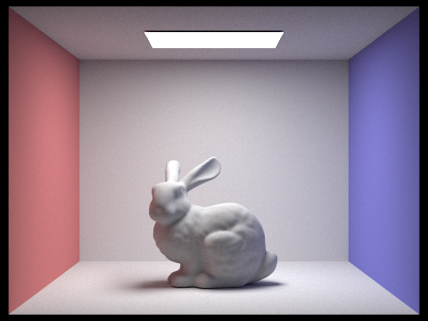
Sample Rate Comparison
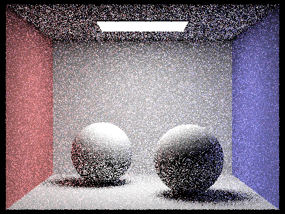
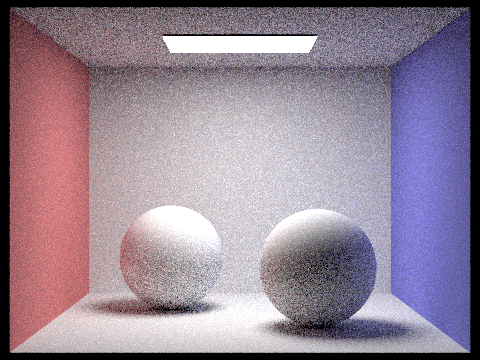
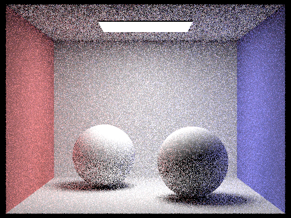
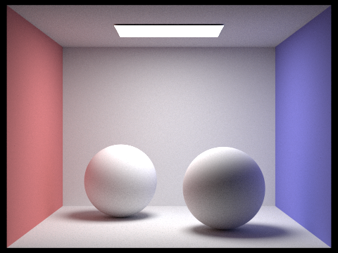
Part 5
Adaptive SamplingAlgorithm Explanation - The Baker Analogy
To help me understand adaptive sampling, I had to compare it to something I know well, baking. When baking a cake or cupcakes, the last step and most important for presentation is frosting. Frosting is a time-consuming task, and it depends on the baker on where they want to save time when frosting. If the surface is perfectly smooth and flat, I can frost it in one quick confident sweep, no need to spend extra time going over it again. But if the surface has deep grooves, sharp corners, and complex textures, I have to slow down and spend much more careful time on those sections to get even coverage. Spending the same amount of time on both sections would be wasteful, the smooth section is already done perfectly after one pass while the complex section still needs work.
Adaptive sampling works exactly the same way. Simple regions like flat walls and backgrounds converge quickly, a few samples gives a stable noise-free estimate. Complex regions like shadow boundaries and the bunny's fur need many more samples to converge. Instead of wasting 2048 samples on an already-converged flat wall pixel, adaptive sampling might stop at 64 and redirect that computation to harder pixels. The rate image above makes this visible. Blue pixels are the "smooth flat surfaces" that needed few samples, red pixels are the "complex textured regions" that needed the full sample budget.
Debugging
The main issue was a variable name collision, the loop variable i was reused for the convergence measure I, silently overwriting the loop counter. Renamed to fix. Also had the adaptive sampling check placed after the loop instead of inside it, meaning convergence was never checked during sampling. The sampleCountBuffer line had sampleBuffer instead of sampleBuffer.w for the stride calculation, causing an array index error.
Results — Scene 1
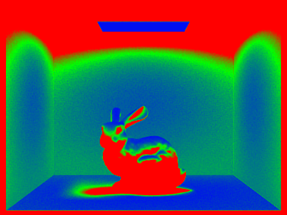
Results — Scene 2
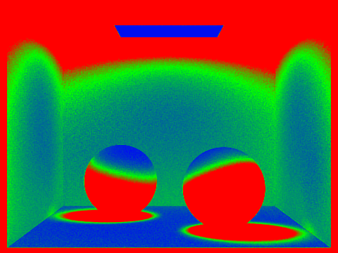